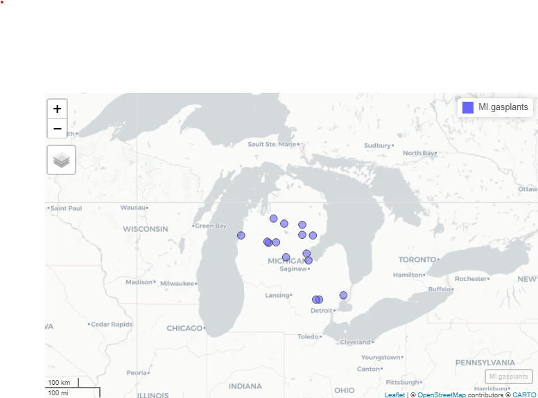

Geospatial with R
Required Reading
- This page.
Guiding Questions
- What are the building blocks of geospatial data?
- How do we handle uniquely geospatial properties like distance or spatial correlation?
Geospatial in R
We will need a handful of new packages for our introduction to geospatial analysis in R. The primary package we will interact with is the sf package. sf stands for “simple features.” It has become the standard for geospatial work in R, and relies on the rgeos and rgdal libraries (which are themselves R compilations of the geos and gdal libraries). Documentation of sf can be found here.
We will also use the mapview package, as well as the tmaptools package. Plus, we’ll use tigris to get state boundaries and tidycensus to pull down census maps. Install those, and any of the many dependencies that they also install.
library(sf)
library(mapview)
library(tigris)
library(tidycensus)
library(tidyverse)
library(tmaptools)Vector vs. Raster
There are two ways of storing 2-D mapped spatial data, raster and vector. A vector representation of a 2-D shape is best described as an irregular polygon with points defining vertices. A square plotted in cartesian coordinates is a vector representation. Conversely, a raster image is a grid of cells where each cell is defined as “in” or “out” of the square. Most computer graphics like JPEG and TIFF are raster graphics and each pixel has an assigned color. To make a raster image of a blue square, we’d make a big grid of pixels, and then color some blue based on their location. To make a blue square in vector form, we’d record just the location of the corners and add instructions to color inside the polygon formed by those corners blue.

Vectors are scalable. Rasters are not
Rasters are great for detail, like pixels in a picture, but they do not scale up very well. Vectors are great for things that do need to scale up. They are also smaller and easier to work with when they aren’t trying to replicate photo-realistic images. Vectors can handle curves by recording the properties of the curve (e.g. bezier curves), while rasters have to approximate curves along the grid of cells, so if you want a smooth curve, you need lots of cells.
Geospatial work is almost always done in vectors because (1) it is easier to store data as vectors, and (2) it is easier to manipulate, project, intersect, or connect vector points, lines, and polygons.
We are going to work entirely with vectors today.
Vectors: points, lines, and polygons
Most everything we would want to map can be represented as a point, a line, or a polygon. Points could be the location of power plants in the US, or the location of COVID cases, or the location of major intersections. Lines could be the location of train tracks, the shortest distance between someone’s house and the nearest restaurants, or a major road. Polygons could be county boundaries, landowner’s lot lines, or bodies of water.
We can start by making some points, then turning them into a polygon. We’ll just use arbitrary coordinates for now, but will move into GPS latitude-longitude coordinates shortly. We’ll use st_multipoint to create our points object. It takes a numeric matrix only.
myPoints = tribble(~X, ~Y,
0, 0,
0, 4,
1, 4,
1, 1,
.5, 0,
0, 0)
myPoints = st_multipoint(as.matrix(myPoints))
plot(myPoints)
Making polygons
We’ve begun making our first spatial object! Now, we can turn it into a polygon under one condition: the polygon has to “close” in order for R to know which side is the inside. In myPoints, the last point is identical to the first point, so R will “close” it:
plot(st_polygon(list(myPoints)), col = 'darkgreen')
That’s just one polylgon. Let’s add another one. When we created the polygon, we put the points object, myPoints, into a list. If we have a list of, say, two points objects, then we’ll get two polygons:
myPoints2 = tribble(~X, ~Y,
1,1,
2,1,
2,2,
1,2,
1,1)
myPoints2 = st_multipoint(as.matrix(myPoints2))
myPolygons = st_polygon(list(myPoints, myPoints2))
plot(myPolygons, col = 'lightblue')
Now we can see two polygons. Looking at the structure of the polygons:
str(myPolygons)## List of 2
## $ : 'XY' num [1:6, 1:2] 0 0 1 1 0.5 0 0 4 4 1 ...
## ..- attr(*, "dimnames")=List of 2
## .. ..$ : NULL
## .. ..$ : chr [1:2] "X" "Y"
## $ : 'XY' num [1:5, 1:2] 1 2 2 1 1 1 1 2 2 1
## ..- attr(*, "dimnames")=List of 2
## .. ..$ : NULL
## .. ..$ : chr [1:2] "X" "Y"
## - attr(*, "class")= chr [1:3] "XY" "POLYGON" "sfg"Notice that one of the classes is sfg. This is a sf package-defined spatial object.
Getting points on a plot
One little-known trick in R is super helpful in spatial work. If you plot(myPolygons) in your own R-studio console (so it appears in your “Plots” pane, not knit into your document), you can use click(n) to interactively get \(n\) spatial points in the coordinate system of your plot.
myClicks = click(n = 3)
myClicks = rbind(myClicks, myClicks[1,]) # copy the first point to the last point to "close"
myNewPolygon = st_polygon(list(st_multipoint(myClicks)))
plot(myPolygons, col = 'lightblue')
plot(myNewPolygon, col = 'green', add=T)
Making lines
We could also create a line with our points. I’ll leave off the one point we added to “close” the polygon. Note that the line is colored blue, not the (uncompleted) polygon.
myLine = st_linestring(myPoints[1:4,])
plot(myLine, col = 'blue')
Reading spatial data
While it’s fun to draw our own shapes (caution: my definition of fun \(\neq\) your definition of fun), we’re probably most interested in finding and using existing spatial data. Let’s talk briefly about the types of spatial data out there:
- Shapefiles
- Shapefiles are not actually single files - they’re usually 4-6 files with similar names and different suffixes like .dbf, .shx, etc. This is because the shapefile format kind of pre-dates our current way of thinking of file storage. The most common program for reading or making shapefiles is ESRI’s ArcGIS. It is expensive, cumbersome, and some may say bloated. Our goal in this section is to be able to rescue shapefiles from the clutches of ArcGIS and open them in R
- GEOJSON
- JSON is a way of structuring text data (like a .csv) but with the potential for nests in the data (like our
listobject) where each nest has a different data structure. GEOJSON pairs this with WKT or Well-Known Text representations of coordinates and takes care of making sure that each observation in the JSON data has a corresponding polygon in WKT coordinates.
- JSON is a way of structuring text data (like a .csv) but with the potential for nests in the data (like our
- KML
- Bare-bones storage of coordinates and basic data
- .RDS
- Okay, this is just R’s native data type for storage, but it’s really helpful for storing
sfobjects
- Okay, this is just R’s native data type for storage, but it’s really helpful for storing
- Comma separated values (.csv)
- Just like the CSV’s we’ve been using, but with Latitude and Longitude columns. Only works for points (one point per .csv line), but is very commonly found. We can use
st_as_sfto tell R which columns are the latitude and longitude.
- Just like the CSV’s we’ve been using, but with Latitude and Longitude columns. Only works for points (one point per .csv line), but is very commonly found. We can use
We can open and use any one of these filetypes. I will cover Shapefiles and GEOJSON as the latter has become a very popular way of sharing spatial datasets.
Where to find spatial data
Spatial data is all around us! Try searching google for a topic + “spatial shapefile”. One of my favorite sources for spatial data is the DHS HIFLD Open database, which has lots of government datasets that are well-organized by category. Click through, and when you find something you like, click the “Download” button. If there is a GEOJSON or KML file available, right-click and copy the link address. Then, use that with st_read(). On many maps (including this one), the GeoJSON link is shown under the API drop-down. Use GeoJSON over KML as some systems have issues importing the data fields in KML.
Loading the data
We’ll use the sf package’s st_read to open spatial data. Here, I’m loading the Natural Gas Processing Plants data from the Energy section of HIFLD. I’m using the GeoJSON option, which st_read() knows how to handle:
gasplants = st_read('https://opendata.arcgis.com/datasets/ca984888f8154c63bf3a023f0a1f9ac2_0.geojson') %>%
dplyr::select(name = NAME)## Reading layer `Natural_Gas_Processing_Plants' from data source
## `https://opendata.arcgis.com/datasets/ca984888f8154c63bf3a023f0a1f9ac2_0.geojson'
## using driver `GeoJSON'
## Simple feature collection with 840 features and 44 fields
## Geometry type: POINT
## Dimension: XY
## Bounding box: xmin: -158.0906 ymin: 21.30889 xmax: -78.6591 ymax: 65.2873
## Geodetic CRS: WGS 84head(gasplants)## Simple feature collection with 6 features and 1 field
## Geometry type: POINT
## Dimension: XY
## Bounding box: xmin: -88.1682 ymin: 30.94855 xmax: -86.88647 ymax: 31.29632
## Geodetic CRS: WGS 84
## name geometry
## 1 CHUNCHULA GAS PLANT POINT (-88.1682 30.94855)
## 2 ATMORE TREATING FACILITY POINT (-87.43715 31.17234)
## 3 FLARE-BUTLER STREET GAS PLANT POINT (-87.42975 31.24128)
## 4 BIG ESCAMBIA CREEK GAS PLANT POINT (-87.36302 31.07158)
## 5 DOGWOOD OAKS PLANT POINT (-87.18784 31.24347)
## 6 CASTLEBERRY GAS PROCESSING PLANT POINT (-86.88647 31.29632)The sf data type holds both the data (which here is just the name of the plant) and the “geometry”, which are the points. It’s tidy data - one row is one observation of one plant, and each row has a set of coordinates telling us where to find the plant.
We can use ggplot with geom_sf() to plot these points. They’re just scattered across the country and we don’t automatically get a background map, but here are the points
ggplot(gasplants) + geom_sf() + theme_minimal()
Well, we’re missing some context here – we can kind of make out the point of Texas down there, but it’s hard to tell anything about where these plants are located. Let’s use tidycensus to get a map of the US, then plot it plus the points. Note we use different data = in each of the geom_sf() calls:
US <- states(cb = TRUE, progress_bar = FALSE) # tidycensus maps
ggplot() + geom_sf(data = US, col = 'gray50') +
geom_sf(data = gasplants) + theme_minimal()
Getting there. The problem now is that the tigris data covers all US territories, which are really spread out! Let’s drop down to just Michigan. We can use good old filter just like with regular data:
MI = states(cb = TRUE) %>% dplyr::filter(STUSPS=='MI')
ggplot() + geom_sf(data = MI, col = 'gray50') +
geom_sf(data = gasplants) + theme_minimal()
Well, now we have a different problem. We want to have only the gasplants that are over the state of Michigan. That requires a spatial join. Luckily, our tidyverse syntax works pretty seamlessly on sf objects. First, we have to take care of a little issue with spatial data. The projection
Projections, briefly
The projection for spatial data is the translation from a 3-D object (e.g. the globe) to a 2-D space (a map, or the cartesian x-y coordinates of our screen). This is no simple matter! There are entire PhD programs dedicated to forming and processing projections and datum (which refer to the shape of the globe, which is not actually round). It can all be a nightmare. Worst of all, projections determine the definition of your coordinates, so you may be at -81 latitude, +30 longitude, but in another projection, you might be 1245349m above some reference point, and -2452849m to the left of that point. Projections define the distance along the X and Y axis, the scale of the coordinates, and a lot of other stuff about your 2-D polygons.
Luckily, over the last few years, very smart people have been working on regularizing “projections”. Now, we really need to know three things:
- The projection of your data’s coordinates when you read it in
- The projection you want your data to be in when you map it
- The projection of other spatial data you may want to combine.
Importing projected data
GEOJSON, shapefiles, and KML files usually come with embedded projections stored as EPSG numbers like ‘4326’ (incidentally, ‘4326’ is the usual projection for GPS coordinates). Thus, the first one is usually already taken care of. If your data doesnt have a PROJ4 or EPSG number but the coordinates are all between -180 and +180, it’s likely in EPSG=4326. If none of those, then the data creator should have metadata stating the proejction. It might take some googling and some trial and error.
For mapping, you might need to transform your data between projections (or “reproject” it, same thing). We use st_transform for this. We only need to give R the EPSG (Geodetic Parameter Dataset) of the projection you want to end up in. As long as it’s already in a known projection, R can re-project it. The projection is refered to by the Coordinate Reference System (CRS). st_crs will tell us the projection (EPSG number and a lot more) of any spatial object. If they do not match, then R will give an error or, worse, plot them on totally different scales - sometimes you end up with points from the US landing in the middle of the Indian Ocean! In fact, look back at our map of gas plants and the US.
Did you notice that a lot of the US gas plants mapped to…Canada? Those might be Alaskan plants, but the projections were not identical, so the definition of coordinates were different between our US map and our gas plants maps. Neither is “right” or “wrong” - they just have to be the same. Differences in projections tend to be worse at the extreme latitudes.
st_crs(gasplants)## Coordinate Reference System:
## User input: WGS 84
## wkt:
## GEOGCRS["WGS 84",
## DATUM["World Geodetic System 1984",
## ELLIPSOID["WGS 84",6378137,298.257223563,
## LENGTHUNIT["metre",1]]],
## PRIMEM["Greenwich",0,
## ANGLEUNIT["degree",0.0174532925199433]],
## CS[ellipsoidal,2],
## AXIS["geodetic latitude (Lat)",north,
## ORDER[1],
## ANGLEUNIT["degree",0.0174532925199433]],
## AXIS["geodetic longitude (Lon)",east,
## ORDER[2],
## ANGLEUNIT["degree",0.0174532925199433]],
## ID["EPSG",4326]]st_crs(MI)## Coordinate Reference System:
## User input: NAD83
## wkt:
## GEOGCRS["NAD83",
## DATUM["North American Datum 1983",
## ELLIPSOID["GRS 1980",6378137,298.257222101,
## LENGTHUNIT["metre",1]]],
## PRIMEM["Greenwich",0,
## ANGLEUNIT["degree",0.0174532925199433]],
## CS[ellipsoidal,2],
## AXIS["latitude",north,
## ORDER[1],
## ANGLEUNIT["degree",0.0174532925199433]],
## AXIS["longitude",east,
## ORDER[2],
## ANGLEUNIT["degree",0.0174532925199433]],
## ID["EPSG",4269]]One is in 4326, the other in 4269. We can use st_transform on the gasplants data, which will reproject the points (and won’t change the data at all). The data won’t be any different, and the points won’t look too much different
gasplants = gasplants %>%
st_transform(st_crs(MI))
ggplot(gasplants) + geom_sf() + theme_minimal()
Importing unprojected data
Sometimes, we have data only in .csv format, but with X and Y coordinates (e.g. Longitude and Latitude). To import this data, we do the following:
- Read in from .csv, .xls, etc.
- Determine the CRS of the data (usually 4326 for gps coordinates)
- Set the spatial coordinates and CRS
We know how to do the first, and the 2nd and 3rd are done in one step. We’ll make a data.frame of city names and use the tmaptools package’s geocode_OSM to get the latitudes and longitudes of the city centers. This function uses open-source Open Street Maps instead of the google API (which is used by ggmap). This way, we don’t need an API key.
ourCities = geocode_OSM(c('Detroit','Lansing','Grand Rapids','Kalamazoo','Traverse City','Marquette')) %>%
select(City = query, lat = lat, lon = lon)
head(ourCities)## City lat lon
## 1 Detroit 42.33155 -83.04664
## 2 Lansing 42.73377 -84.55538
## 3 Grand Rapids 42.96324 -85.66786
## 4 Kalamazoo 42.29171 -85.58723
## 5 Traverse City 44.76064 -85.61653
## 6 Marquette 46.44815 -87.63059Since these are GPS-type coordinates, we are going to assume the CRS is EPSG=4326. Longitude is the “x” axis, and latitude is the “y” axis.
ourCities.spatial = st_as_sf(ourCities, coords = c('lon','lat'), crs = 4326)
head(ourCities.spatial)## Simple feature collection with 6 features and 1 field
## Geometry type: POINT
## Dimension: XY
## Bounding box: xmin: -87.63059 ymin: 42.29171 xmax: -83.04664 ymax: 46.44815
## Geodetic CRS: WGS 84
## City geometry
## 1 Detroit POINT (-83.04664 42.33155)
## 2 Lansing POINT (-84.55538 42.73377)
## 3 Grand Rapids POINT (-85.66786 42.96324)
## 4 Kalamazoo POINT (-85.58723 42.29171)
## 5 Traverse City POINT (-85.61653 44.76064)
## 6 Marquette POINT (-87.63059 46.44815)Now we have the point geometries! We can map this:
ggplot() +
geom_sf(data = MI, fill = 'gray90') +
geom_sf(data = ourCities.spatial, col = 'blue') +
theme_minimal()
Spatial merges
Combining spatial data is the strength of geospatial analysis. We have our map of MI, and we have out points. Let’s “merge” the points to the map, meaning let’s connect the elements in our map (the state of MI) to the elements in our points (gas plants). This is a point-to-polygon merge.
Point-to-polygon merges
We’ll use st_join to produce an inner join, so we keep only those points that are “in” (spatially) the state of Michigan. I’m specifying join = st_intersects though this is the default. Note that all the points that remain in the merged MI.gasplants are in Michigan, and note that all the data columns from MI are now in gasplants. We’ll use a county map of MI here so we will have the county data for each county containing a gas plant.
MI.counties = counties(state = 'MI', cb = TRUE, progress_bar = FALSE)
MI.gasplants = gasplants %>%
st_transform(st_crs(MI.counties)) %>%
st_join(MI.counties, left = FALSE,
join = st_intersects)
head(MI.gasplants)## Simple feature collection with 6 features and 10 fields
## Geometry type: POINT
## Dimension: XY
## Bounding box: xmin: -85.36458 ymin: 42.61859 xmax: -82.73532 ymax: 44.69001
## Geodetic CRS: NAD83
## name STATEFP COUNTYFP COUNTYNS
## 166 MONITOR 11 26 017 01622951
## 167 DRZ (BEAVER CREEK) 26 039 01622962
## 168 HIGHLAND CENTRAL PROCESSING FACILITY 26 125 01623005
## 169 KALKASKA GAS PLANT 26 079 01622982
## 170 LENOX 36 CENTRAL PRODUCTION 26 099 01622992
## 171 SHERMAN 35 26 133 01623009
## AFFGEOID GEOID NAME LSAD ALAND AWATER
## 166 0500000US26017 26017 Bay 06 1145399057 488149217
## 167 0500000US26039 26039 Crawford 06 1441077804 17917861
## 168 0500000US26125 26125 Oakland 06 2245928625 103804387
## 169 0500000US26079 26079 Kalkaska 06 1449729125 28020185
## 170 0500000US26099 26099 Macomb 06 1241050552 237627819
## 171 0500000US26133 26133 Osceola 06 1466674350 17425112
## geometry
## 166 POINT (-83.95389 43.62672)
## 167 POINT (-84.81844 44.55881)
## 168 POINT (-83.57433 42.61859)
## 169 POINT (-85.19667 44.69001)
## 170 POINT (-82.73532 42.73481)
## 171 POINT (-85.36458 44.07761)Now, we can plot the counties map with the gasplants over it. We can even use aes(...) to fill the counties:
ggplot() +
geom_sf(data = MI.counties, aes(fill = NAME), show.legend = F) +
geom_sf(data = MI.gasplants) +
theme_minimal() 
Huh. Most gas plants in Michigan are to the north of here. Interesting.
Mapview
Sometimes, we want to be able to zoom in and out. ggplot is static, so that won’t work too well. Thanks to the leaflet engine, the mapview packages is stellar for exploration of spatial data. You can specify zcol = Name if you want to color by the Name field. I can’t embed this in the website, but you can run this at home. It will appear in the “Viewer” pane, not in the “Plots” pane. Unlike the static image here, you will be able to zoom and pan.
mapview(MI.gasplants)
In an actual mapview window (not this static image here), clicking on the points or polygons will bring up a pop-up of the data for that row. Mapview is very useful for exploring your spatial data.
Polygon-to-polygon merges
The gas plants and state merge, above, was very simple because points are always either within or not within a polygon. Worst that can happen is some of your points are not over any polygon at all (resulting in NA values). But what if you’re merging polygons to polygons?
First, let’s load some (overlapping) polygons. We can load up all of our states again (dropping the territories). We’ll also use a map of watersheds (which cross state boundaries). This is the HUC-4 map of the Rockies from the US Geological Survey. The HUC-4 is a definition of a watershed where the area of the HUC-4 is the area drained by a major tributary:
US = states(cb=TRUE) %>%
dplyr::filter(!STUSPS %in% c('PR','GU','VI','MP','AS','AK','HI'))
HUC4 = st_read('https://opendata.arcgis.com/datasets/7f8632f3e3114623b4f5c8f97d935dca_1.kml') %>%
st_transform(st_crs(US)) %>%
dplyr::mutate(randomData = rpois(n(), 20))## Reading layer `USGS_NHD_Hydrologic_Units__HUCs_' from data source
## `https://opendata.arcgis.com/datasets/7f8632f3e3114623b4f5c8f97d935dca_1.kml'
## using driver `KML'
## Simple feature collection with 12 features and 2 fields
## Geometry type: POLYGON
## Dimension: XY
## Bounding box: xmin: -121.5779 ymin: 31.5082 xmax: -109.7625 ymax: 45.25827
## Geodetic CRS: WGS 84ggplot() +
geom_sf(data = US, col = 'gray50') +
geom_sf(data = HUC4, aes(fill = Name), show.legend = FALSE) +
theme_minimal()
These watersheds clearly overlap state boundaries. So what happens if we merge them? sf will create a new obsveration (row) for every HUC-4 / State combination
poly.merge = HUC4 %>%
st_join(US, left = TRUE)
head(poly.merge)## Simple feature collection with 6 features and 12 fields
## Geometry type: POLYGON
## Dimension: XY
## Bounding box: xmin: -115.7061 ymin: 31.5082 xmax: -111.5061 ymax: 39.30285
## Geodetic CRS: NAD83
## Name Description randomData STATEFP STATENS
## 1 Lower Colorado 27 06 01779778
## 1.1 Lower Colorado 27 32 01779793
## 1.2 Lower Colorado 27 04 01779777
## 2 Lower Colorado-Lake Mead 18 49 01455989
## 2.1 Lower Colorado-Lake Mead 18 32 01779793
## 2.2 Lower Colorado-Lake Mead 18 04 01779777
## AFFGEOID GEOID STUSPS NAME LSAD ALAND AWATER
## 1 0400000US06 06 CA California 00 403660088482 20305454540
## 1.1 0400000US32 32 NV Nevada 00 284537049864 1839662829
## 1.2 0400000US04 04 AZ Arizona 00 294360282618 859561204
## 2 0400000US49 49 UT Utah 00 213355135666 6529910339
## 2.1 0400000US32 32 NV Nevada 00 284537049864 1839662829
## 2.2 0400000US04 04 AZ Arizona 00 294360282618 859561204
## geometry
## 1 POLYGON ((-114.6233 36.0304...
## 1.1 POLYGON ((-114.6233 36.0304...
## 1.2 POLYGON ((-114.6233 36.0304...
## 2 POLYGON ((-115.0786 39.3005...
## 2.1 POLYGON ((-115.0786 39.3005...
## 2.2 POLYGON ((-115.0786 39.3005...Now, every HUC-4 like “Lower Colorado” has multiple observations, one for each STUSPS that it touches. When we plot it, though, each of those observations are still attached to the same HUC-4 polygon.
ggplot(poly.merge) + geom_sf() +
theme_minimal()
We have another option in our join - we can ask st_join to keep just the largest:
poly.merge.largest = HUC4 %>%
st_join(US, left = TRUE, largest = TRUE)
head(poly.merge.largest)## Simple feature collection with 6 features and 12 fields
## Geometry type: POLYGON
## Dimension: XY
## Bounding box: xmin: -121.255 ymin: 31.5082 xmax: -111.5061 ymax: 42.3448
## Geodetic CRS: NAD83
## Name Description randomData STATEFP STATENS
## 1 Lower Colorado 27 04 01779777
## 2 Lower Colorado-Lake Mead 18 04 01779777
## 3 Northern Mojave-Mono Lake 15 06 01779778
## 4 Central Nevada Desert Basins 26 32 01779793
## 5 North Lahontan 23 06 01779778
## 6 Black Rock Desert-Humboldt 29 32 01779793
## AFFGEOID GEOID STUSPS NAME LSAD ALAND AWATER
## 1 0400000US04 04 AZ Arizona 00 294360282618 859561204
## 2 0400000US04 04 AZ Arizona 00 294360282618 859561204
## 3 0400000US06 06 CA California 00 403660088482 20305454540
## 4 0400000US32 32 NV Nevada 00 284537049864 1839662829
## 5 0400000US06 06 CA California 00 403660088482 20305454540
## 6 0400000US32 32 NV Nevada 00 284537049864 1839662829
## geometry
## 1 POLYGON ((-114.6233 36.0304...
## 2 POLYGON ((-115.0786 39.3005...
## 3 POLYGON ((-118.7594 38.3208...
## 4 POLYGON ((-114.7211 41.2410...
## 5 POLYGON ((-120.1835 41.9743...
## 6 POLYGON ((-117.9693 42.3430...Now, there is only one observation per HUC-4, and it corresponds to the state that has the most overlap area-wise. For Lower Colorado, Arizona has the most overlap. There are lots of things besides st_intersect we can use to call two things “joined”. ?st_join tells you about them. For instance, we can use join = st_covers and we will only get a merge when HUC-4 completely covers the state.
HUC4 %>%
st_join(US, left = TRUE, join = st_covers) %>%
head()## Simple feature collection with 6 features and 12 fields
## Geometry type: POLYGON
## Dimension: XY
## Bounding box: xmin: -121.255 ymin: 31.5082 xmax: -111.5061 ymax: 42.3448
## Geodetic CRS: NAD83
## Name Description randomData STATEFP STATENS AFFGEOID
## 1 Lower Colorado 27 <NA> <NA> <NA>
## 2 Lower Colorado-Lake Mead 18 <NA> <NA> <NA>
## 3 Northern Mojave-Mono Lake 15 <NA> <NA> <NA>
## 4 Central Nevada Desert Basins 26 <NA> <NA> <NA>
## 5 North Lahontan 23 <NA> <NA> <NA>
## 6 Black Rock Desert-Humboldt 29 <NA> <NA> <NA>
## GEOID STUSPS NAME LSAD ALAND AWATER geometry
## 1 <NA> <NA> <NA> <NA> NA NA POLYGON ((-114.6233 36.0304...
## 2 <NA> <NA> <NA> <NA> NA NA POLYGON ((-115.0786 39.3005...
## 3 <NA> <NA> <NA> <NA> NA NA POLYGON ((-118.7594 38.3208...
## 4 <NA> <NA> <NA> <NA> NA NA POLYGON ((-114.7211 41.2410...
## 5 <NA> <NA> <NA> <NA> NA NA POLYGON ((-120.1835 41.9743...
## 6 <NA> <NA> <NA> <NA> NA NA POLYGON ((-117.9693 42.3430...None of the HUC-4’s completely cover a state, so we get NA for all the state data.
The other thing we can do is ask R to create separate polygons - one for every HUC-4 / state combination. That isn’t a merge, but it plays a similar role. Note this uses st_intersection:
poly.int = HUC4 %>%
st_intersection(US) %>%
arrange(Name)
head(poly.int)## Simple feature collection with 6 features and 12 fields
## Geometry type: GEOMETRY
## Dimension: XY
## Bounding box: xmin: -120.4649 ymin: 35.20662 xmax: -114.7152 ymax: 42.3448
## Geodetic CRS: NAD83
## Name Description randomData STATEFP STATENS
## 6 Black Rock Desert-Humboldt 29 06 01779778
## 6.1 Black Rock Desert-Humboldt 29 32 01779793
## 6.2 Black Rock Desert-Humboldt 29 41 01155107
## 7 Central Lahontan 22 06 01779778
## 7.1 Central Lahontan 22 32 01779793
## 4 Central Nevada Desert Basins 26 06 01779778
## AFFGEOID GEOID STUSPS NAME LSAD ALAND AWATER
## 6 0400000US06 06 CA California 00 403660088482 20305454540
## 6.1 0400000US32 32 NV Nevada 00 284537049864 1839662829
## 6.2 0400000US41 41 OR Oregon 00 248607777514 6191602576
## 7 0400000US06 06 CA California 00 403660088482 20305454540
## 7.1 0400000US32 32 NV Nevada 00 284537049864 1839662829
## 4 0400000US06 06 CA California 00 403660088482 20305454540
## geometry
## 6 MULTIPOLYGON (((-119.9997 4...
## 6.1 MULTIPOLYGON (((-119.9997 4...
## 6.2 MULTIPOLYGON (((-118.7203 4...
## 7 POLYGON ((-120.0016 39.5794...
## 7.1 POLYGON ((-120.0057 39.2252...
## 4 MULTIPOLYGON (((-118.7021 3...Now, we have a unique polygon for every combination of HUC-4 and State:
ggplot() +
geom_sf(data = US, fill = 'gray50') +
geom_sf(data = poly.int, aes(fill = STUSPS), show.legend = FALSE) +
theme_minimal()
Here, I’ve set the fill to the state, but you can see that the HUC-4’s have boundaries at the state line.
Summarizing
Our summarize function let us collapse by groups and calculate interseting things like average (over a group or region). The neat part is that it works on spatial data as well. Let’s look at the data again:
head(poly.int %>%
dplyr::select(Name, randomData, STUSPS) %>%
arrange(STUSPS))## Simple feature collection with 6 features and 3 fields
## Geometry type: GEOMETRY
## Dimension: XY
## Bounding box: xmin: -120.4649 ymin: 32.2603 xmax: -111.5061 ymax: 41.10578
## Geodetic CRS: NAD83
## Name randomData STUSPS
## 1.2 Lower Colorado 27 AZ
## 2.2 Lower Colorado-Lake Mead 18 AZ
## 6 Black Rock Desert-Humboldt 29 CA
## 7 Central Lahontan 22 CA
## 4 Central Nevada Desert Basins 26 CA
## 1 Lower Colorado 27 CA
## geometry
## 1.2 POLYGON ((-114.8165 32.5069...
## 2.2 POLYGON ((-114.7368 36.0159...
## 6 MULTIPOLYGON (((-119.9997 4...
## 7 POLYGON ((-120.0016 39.5794...
## 4 MULTIPOLYGON (((-118.7021 3...
## 1 POLYGON ((-115.137 35.40604...So AZ has two HUC-4’s in it - Lower Colorado and Lower Coloardo - Lake Mead (you can see them above). Summarize on geospatial data works just like regular data - we can group_by(STUSPS), and we can summarize() any of the data. I threw some random data into HUC-4 so we can summarize that.
But how do we combine data specific to each HUC-4 in AZ? We could:
Just take the average of all of the
randomDatavalues within the state.Take a weighted average of
randomDatawhere the area is the weightTake some other function (min, max, etc.) of
randomData.
We can implement any of these using sf. Let’s do the second since it nests the first. First, we’ll add the area of the State x HUC-4 using st_area, which gives a units object. We can turn that into a numeric:
poly.int.summary = poly.int %>%
dplyr::mutate(State.HUC.area = as.numeric(st_area(.))) %>%
group_by(STUSPS) %>%
dplyr::summarize(mean.randomData = weighted.mean(randomData, w = State.HUC.area))
head(poly.int.summary)## Simple feature collection with 6 features and 2 fields
## Geometry type: GEOMETRY
## Dimension: XY
## Bounding box: xmin: -121.5779 ymin: 32.2603 xmax: -111.0436 ymax: 45.25827
## Geodetic CRS: NAD83
## # A tibble: 6 x 3
## STUSPS mean.randomData geometry
## <chr> <dbl> <GEOMETRY [°]>
## 1 AZ 22.0 POLYGON ((-114.7368 36.01591, -114.737 36.01577, -114.~
## 2 CA 17.9 POLYGON ((-120.2083 41.9941, -120.2083 41.99408, -120.~
## 3 ID 23.8 POLYGON ((-112.9978 44.44793, -112.9979 44.44793, -112~
## 4 MT 23 MULTIPOLYGON (((-111.3842 44.75446, -111.3846 44.75484~
## 5 NV 25.2 POLYGON ((-115.0339 41.99601, -115.0382 41.99601, -115~
## 6 OR 27.8 POLYGON ((-118.2951 41.99658, -118.1974 41.99699, -118~sf with the tidyverse makes it really easy to apply spatial versions of summarize and mutate. Very useful.
If we had wanted to just take the average (ignoring area), we’d just leave out the w = State.HUC.area or just used mean. If we had wanted to take, say, the minimum, we would use min(randomData) instead of weighted.mean. We can use whatever function we want in summarize, just as we did with non-spatial data.
Cropping vs. merging
Sometimes, we wish to only crop to a region rather than merging. sf has the st_crop function to do this. Let’s crop our HUC-4 data to just the bounding box of the state of Nevada
HUC4.nv = HUC4 %>%
st_crop(US %>% dplyr::filter(STUSPS=='NV'))
ggplot(HUC4.nv) + geom_sf(aes(fill = Name), show.legend = F) +
geom_sf(data = US %>% dplyr::filter(STUSPS=='NV'), fill = NA, col = 'gray20', lwd = 3 ) +
theme_minimal()
Bounding boxes
Notice that this forms a box around Nevada and uses that to crop. To get the shape of Nevada, we would have to use st_intersection.
But this introduces a useful concept: the bounding box. The bounding box is defined by the closest 4 points that form a box that perfectly encloses the object (even when the object is not a rectangle). The extent of the above plot is the bounding box for Nevada.
Nevada.bbox = st_bbox(US %>% dplyr::filter(STUSPS=='NV'))
Nevada.bbox## xmin ymin xmax ymax
## -120.00575 35.00186 -114.03965 42.00221The bounding box can be used to frame a “window” in a ggplot using geom_sf(). That is, sometimes, we want to plot just a subsection of a map, but we still want the data to be the whole map. Here’s an example using the HOLC Redlining Maps, which were created in the 1930’s and were used to segregate US housing up until the 1970’s. They are available at the University of Richmond’s Mapping Inequality site. We can load Lansing and Detroit using the code below:
lansing = st_read('https://dsl.richmond.edu/panorama/redlining/static/downloads/geojson/MILansing19XX.geojson')## Reading layer `MILansing19XX' from data source
## `https://dsl.richmond.edu/panorama/redlining/static/downloads/geojson/MILansing19XX.geojson'
## using driver `GeoJSON'
## Simple feature collection with 4 features and 4 fields
## Geometry type: MULTIPOLYGON
## Dimension: XY
## Bounding box: xmin: -84.60737 ymin: 42.67877 xmax: -84.45292 ymax: 42.77022
## Geodetic CRS: WGS 84detroit = st_read('https://dsl.richmond.edu/panorama/redlining/static/downloads/geojson/MIDetroit1939.geojson')## Reading layer `MIDetroit1939' from data source
## `https://dsl.richmond.edu/panorama/redlining/static/downloads/geojson/MIDetroit1939.geojson'
## using driver `GeoJSON'
## Simple feature collection with 238 features and 4 fields
## Geometry type: MULTIPOLYGON
## Dimension: XY
## Bounding box: xmin: -83.40036 ymin: 42.13495 xmax: -82.87286 ymax: 42.56012
## Geodetic CRS: WGS 84mi.redlining = bind_rows(lansing, detroit) %>%
st_transform(st_crs(MI))
ggplot(mi.redlining) +
geom_sf(aes(fill = holc_grade, col = holc_grade)) +
geom_sf(data = MI, fill = NA, col = 'gray50') +
scale_fill_manual(values = c('A' = 'green', 'B' = 'blue', 'C' = 'yellow', 'D' = 'red'),
aesthetics = c('color','fill')) +
theme_minimal()
We can tell that our polygons have plotted, but since we have the whole state of Michigan, they’re almost unreadable. We need to set our window over the lower part of the lower peninsula. We’ll use coord_sf to do this, but first we need to define a window. Since windows are almost always rectangular, we can use the st_bbox(mi.redlining), but we have to pull out the xlim (xmin, xmax) and ylim (ymin, ymax):
ggplot(mi.redlining) +
geom_sf(aes(fill = holc_grade, col = holc_grade)) +
geom_sf(data = MI, fill = NA, col = 'gray50') +
scale_fill_manual(values = c('A' = 'green', 'B' = 'blue', 'C' = 'yellow', 'D' = 'red'),
aesthetics = c('color','fill')) +
theme_minimal() +
coord_sf(xlim = st_bbox(mi.redlining)[c(1, 3)],
ylim = st_bbox(mi.redlining)[c(2, 4)])
Distance matrices
One of the most common spatial statistics we’d use in data analytics is the distance matrix. If we have a set of points and we think that we can explain some data about those points (unemployment, ag production, murders per capita) based on the distance to some explanatory source (gas plants, superfund site, etc.), then we might want to include distance to gas plants in our model as a predictor. Frequently, we’ll use inverse distance, \(\frac{1}{d}\), so that closer things can have more of an impact. To do this, we need a distance matrix.
Let’s combine our gasplants and our ourCities to get the distance from each of our cities to the nearest gas plant. Maybe we have city-level data on student achievements and we want to see if gas plants lower student achievement. While we would need a lot more information to make this model, we can look at what we have for now.
We will use st_distance, which will generate a special type of object that contains the distance information. MI.gasplants has 15 observations, and ourCities has 6, so for each row in ourCities we will get 15 distances, one to each gasplant. This forms a distance matrix where each row is an object in ourCities and each column is an object in MI.gasplants. We are going to take only a few MI.gasplants so we can easily view the results:
ourCities.spatial = ourCities.spatial %>%
st_transform(st_crs(MI.gasplants))
MI.gasplants.small = MI.gasplants[1:4,]
ourDistance = st_distance(x = ourCities.spatial, y = MI.gasplants.small)
ourDistance## Units: [m]
## [,1] [,2] [,3] [,4]
## [1,] 161824.4 285981.74 53774.05 314356.35
## [2,] 110622.4 204035.47 81217.07 223545.24
## [3,] 157108.6 190078.23 175071.56 195692.59
## [4,] 199248.1 259619.40 169087.39 268533.27
## [5,] 182936.7 66993.37 289278.25 34087.52
## [6,] 426387.5 303552.04 533415.88 272213.63We get a units matrix, which has extra properties that allow us to convert the units. The units will be in whatever the CRS of the objects is in - st_crs(ourCities.spatial) tells us the units are meters.
What if we wanted to find the closest gas plant to each city? That is akin to looking at each row, and finding the column that is the smallest, right? We will use apply, and we will note that the order of the columns is the same as the order in MI.gasplants.small, so we can use MI.gasplants.small$name to tell us the name of the closest gas plant. We will apply over each row (MAR=1) and use the which.min function, which returns the index number of the maximum column.
max.index = apply(ourDistance, MAR = 1, which.min)We can combine this index with the MI.gasplants.small object to get the names of the closest gas plant for each of the cities. We’ll make a nice, neat tibble with the city name (in the order from ourCities.spatial), the closest gas plant name, and the distance to that plant:
tibble(City = ourCities.spatial$City,
Closest.gasplant = MI.gasplants.small$name[max.index],
Distance.to.closest = ourDistance[cbind(1:length(max.index), max.index)])## # A tibble: 6 x 3
## City Closest.gasplant Distance.to.closest
## <chr> <chr> [m]
## 1 Detroit HIGHLAND CENTRAL PROCESSING FACILITY 53774.
## 2 Lansing HIGHLAND CENTRAL PROCESSING FACILITY 81217.
## 3 Grand Rapids MONITOR 11 157109.
## 4 Kalamazoo HIGHLAND CENTRAL PROCESSING FACILITY 169087.
## 5 Traverse City KALKASKA GAS PLANT 34088.
## 6 Marquette KALKASKA GAS PLANT 272214.But wait, what is going on in the last line there? Well, recall our distance matrix and max.index:
ourDistance## Units: [m]
## [,1] [,2] [,3] [,4]
## [1,] 161824.4 285981.74 53774.05 314356.35
## [2,] 110622.4 204035.47 81217.07 223545.24
## [3,] 157108.6 190078.23 175071.56 195692.59
## [4,] 199248.1 259619.40 169087.39 268533.27
## [5,] 182936.7 66993.37 289278.25 34087.52
## [6,] 426387.5 303552.04 533415.88 272213.63#
max.index## [1] 3 3 1 3 4 4we want to select from our distance matrix the 1st row, 3rd column; the 2nd row, 3rd column; 3rd row, 1st column; 4th row, 3rd column; 5th row, 4th column; and 6th row, 4th column. This means the row index and column index are not ranges, but are paired. Using cbind(1:6, max.index) makes them paired entries, and we can select specific row x column combinations that way.
st_nearest_feature
As is common in R, there is a function that will get the closest points between to spatial objects. st_nearest_points takes two geometries, and returns the neaarest point in y for every point in x, which is what we did with the MI gas plants.
st_nearest_feature(x = ourCities.spatial, y = MI.gasplants.small)## [1] 3 3 1 3 4 4This is exactly our max.index and can be used *on the y object, MI.gasplants.small, to pull the names, subset, get distances etc.
st_nearest_feature also works for points and polygons, or polygons and polygons, where it returns the index of the polygon that contains the nearest point to the features in x. Let’s find the nearest Great Lake for each of our cities using a KML shapefile of the Great Lakes from WI DNR Note that the GeoJSON link is under “API” on this site. We run into a complex geometry problem, and add st_make_valid() to fix it:
GL = st_read('https://opendata.arcgis.com/datasets/a8bb79fc10e64eee8c3a9db97cc5dc80_4.geojson') %>%
st_transform(st_crs(ourCities.spatial)) %>% st_make_valid()## Reading layer `Great_Lakes' from data source
## `https://opendata.arcgis.com/datasets/a8bb79fc10e64eee8c3a9db97cc5dc80_4.geojson'
## using driver `GeoJSON'
## Simple feature collection with 15 features and 3 fields
## Geometry type: MULTIPOLYGON
## Dimension: XY
## Bounding box: xmin: -92.10222 ymin: 41.38576 xmax: -75.95819 ymax: 49.00535
## Geodetic CRS: WGS 84closest.GL.index = st_nearest_feature(x = ourCities.spatial, y = GL)
ourCities %>% dplyr::mutate(Closest.GreatLake = GL$FEAT_NAME[closest.GL.index])## City lat lon Closest.GreatLake
## 1 Detroit 42.33155 -83.04664 Lake Erie
## 2 Lansing 42.73377 -84.55538 Lake Huron
## 3 Grand Rapids 42.96324 -85.66786 Lake Michigan
## 4 Kalamazoo 42.29171 -85.58723 Lake Michigan
## 5 Traverse City 44.76064 -85.61653 Lake Michigan
## 6 Marquette 46.44815 -87.63059 Lake SuperiorOther resources
Claudia Engel’s “Using Spatial Data with R” is a very useful resource. It covers
sfand an older geospatial library calledspthat has similar functionality but was not tidyverse-friendly.